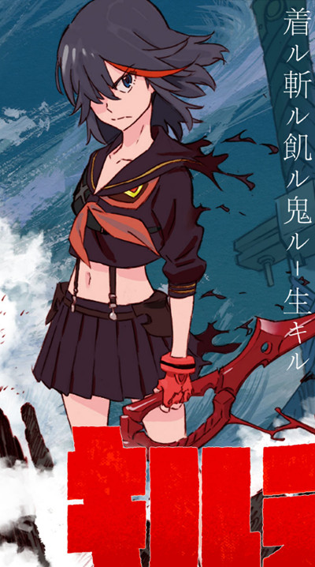
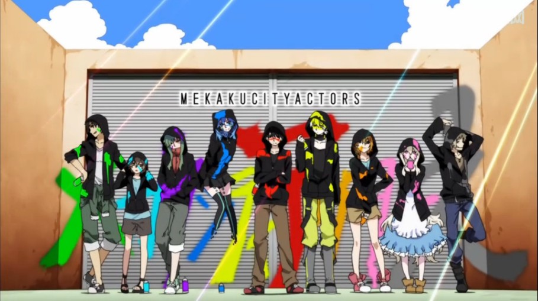
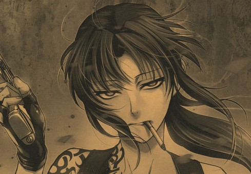
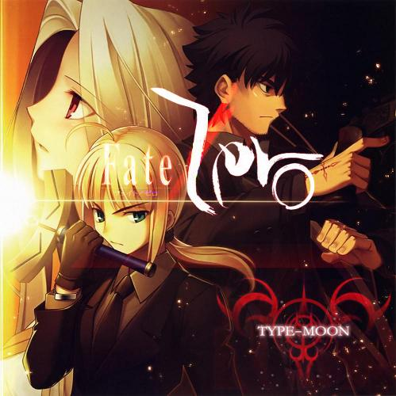

youthy的番剧历史(持续补全中)
一直都有想法想把看过的番剧列一个表,我会慢慢想起看过的番剧,然后在这里补全,写一些自己的评价,以供回忆
2014 年
—————————9月18日更新————————————–
少女革命 ★★★★★
90年代3大OTAKU神作之一,以少女寻找王子的故事线表现女权的解放与抗争,少女的自我救赎,主旨上与今年的迪士尼的冰雪女王一样,很多表现手法很超前,甚至觉得有些梗真不像是90年代的,不得不佩服几原老贼的超前思想.
月刊少女野崎君 ★★★★★
典型的少女漫画般的开场,色调浪漫,少女表白,以为是一部校园恋情剧你就输了,实际上是部搞笑剧,女主意外的萌,男主无口且木讷.几位配角刻画非常成功,不是典型的校园剧,很难得
生存游戏部 ★★★★★
这个月新番也就认真追了生存游戏部和月刊少女,两部在我看来都很有突破,生存游戏部女主也不是按正常套路出牌,内心比较黑暗,在善与恶的选择中肯定会选择恶的人格.而且很搞笑.
舞-hime ★★★★☆
补了部老番,冲着静夏去的.貌似对有点东京口音或者大阪口音的声优有种莫名的喜欢-.-
—————————7月29日更新————————————–
kill la kill (斩服少女) ★★★★★

十分推荐,热血,超展开,世界观奇特(衣服和人类的战斗,啊–剧透了),百合,bgm燃,有泽野大神和小林未郁的合作
目隐都市的演绎者 ★★★★★

很cool的动漫,风格很像物语系列,画风我很喜欢,剧情也不错,前几集完全不明白剧情,看完之后似懂非懂,不是那种看开头就猜到结尾的类型,新房独特的意识流作画方式,还有各种45°角,各种我有姿势我自豪的表现手法,可以说作品很有特色.音乐简直好赞,ed是国歌演唱者Lia唱的,很好听,op更别说,配合各种彩喷画,目隐团集体兜帽衫,真的cool到爆.各种插入曲也很好听,这部作品音乐方面也是上乘之作.喜欢物语系列的一定要看
Love Live 第一季/第二季 ★★★★☆

lovelive可以说是一款很现象级的作品,手游月流水将近过亿,第二季首周BD销量8w+,上海地铁都有lovelive的包装,这些现象其实与动画的质量是不相称的,其实我在补完两季动画后觉得这动画真的不算神作或者上乘之作,它火的背后其实有很多原因可以探讨,包括企划,宣传什么的,就动画本身而言,塑造了9个性格不同的角色,吸引不同的人群,每次看弹幕都会看到”niconico美如画””我姬美如画”之类的.我都觉得烦,也看不出美在哪里,音乐方面我到现在想不起什么印象深刻的歌,只记得配角组A-rise的歌很好听,远不是当初轻音no thank you,listen,don’t say lazy, 相遇天使,带我给我的深刻印象.love live第一季的时候还没有这么火,第二季没出之前网上就各种宣传LL大法,只能说LL力量大,企划宣传好,人民群众喜闻乐见的跟风态度.
—————————7月29日更新————————————–
悠哉日常大王 ★★★★
画质真心很好，风景亮丽，画面党表示很满足，nano.ripe清新的op也很符合我胃口，这部剧诞生了风靡一时的台词“喵帕斯～”，这个台词在动漫里真的很萌，作为一部极其了萝莉，痴女，万年受，炮姐，永远没有台词的神一样的哥哥的日常番，很适合休闲的时候补下。
噬魂师Not ★★★
虽然我不是原著党，原著噬魂师我只看了几集。（原著很好，只看了几集是因为一直没时间补），但是仍然想吐槽下这部剧，卖着百合的题材，又到处埋雷是要闹哪样啊喂～而且画质真是不忍直视，这都14年了是在有些觉得粗糙，还没当初噬魂师给我的感觉好。最后还有几集没看完，回头补上。
虫师 序章 ★★★★★☆
时隔10年,虫师果然没有让人失望,它携带着固有的迷离之音,戴着氤氲的雾气,回到荧屏,片头曲一如既往的让人陶醉,演唱者的声线有点像王若琳,略有成熟,沙哑的感觉.配音依然惯用前作的风格,就像在耳边真实回响,充满生活感.画面不用多说,而且依然是一集一个ED,每首都很好听.我一直觉得任何续作都很大程度上会远远比上作差,尤其虫师这种高质量的动画,实际上没有,是在让我感到欣慰与感动.
请问您今天要来点兔子吗 ★★★☆
普普通通的卖萌番,话说居然有爷爷变成兔子的设定,兔子那么萌,一想到是爷爷顿时都觉得略有X父的感脚…
恶魔之谜 ★★★☆

本来看画面还不错的.但是剧情实在是无趣,打起来也很没有杀手的样子,而且官方各种把漫画的经典百合镜头省掉了.真想给官方寄刀片.不过cp组什么的在p站还是挺火的.
天才麻将少女全国篇 ★★★★★

基本上是国民级动漫了..知名度很高,基本上全是女生,各种超燃的打麻将方式,各种暧昧的女生友情,简称外挂百合少女.(图片:看我大魔王把你们这些渣渣pia飞~)
妄想学生会第二季 ★★★★☆

从没想到曾经轻音里害羞的mio酱,开朗的律队,在这里摇身一变,成了满口黄笑话的学生会长和副会长..男主的存在纯粹是为了吐槽会长的黄笑话…第二季开头画质惊人,漫天飘舞的粉色樱花仿佛告诉你这是一个充满青春气息的校园爱情短篇,然而阳子会用面不改色的讲黄笑话的方式打你的脸.俗称黄段子学生会.
中二病也要谈恋爱第二季★★★★☆
其实中二病异常的火爆我也不太明白,作为早已远离后宫番的我,森凸是我唯一坚持下去的动力..森大人在角色歌里和第一季ed里面的御姐声线是在太迷人了.不过京都一如既往的高画质水准让中二场景展开时的画面很是惊艳.福山润鲁鲁修的声线也是我看下去的动力把.抛出后宫在我心中的不良印象,这部番还是不错的.
樱Trick★★★★
第一集的时候看到满弹幕的”我好兴奋”,着实吃了一惊,芳文社作为百合社真是业界良心,第一集就送上各种赤裸裸的接吻镜头,还有呻吟声….不过作为日常来说,我觉得最重要的不是搞笑就是治愈,而这部我感觉有些太赤裸导致的对各种镜头都无感了.
境界的彼方★★★
我不明白为何当初这部番那么火,出了一贯的高清画质,没有什么可圈可点的地方,难道是因为眼镜控众多?⊙﹏⊙b汗.
唯一吸引我的也就是有意思的大阪口音和茅原实里的配音了.哎,对这种整天”我不高兴”的口癖仿佛可以加上去般的生硬的女主,是在提不起兴趣.
弹丸论破之希望的学园和绝望高中生★★★★☆

弹丸论破是部不错的动漫,根据游戏改编,其实剧情什么的也就那样,主要是风格与众不同,有点当初看海猫鸣泣之时的感觉,有些游戏里的设定显得与众不同,而且画风也很忠于游戏,熊校长也算是风极一时的角色了.到处可见.而且开头音乐风格简直32个赞.一般动画很少有这种风格.值得一看
蔷薇少女第三季★★★★
还没看完,作为看过前两季的人来说第三季来的好晚好晚,都已经把之前的剧情忘得差不多了.不过惊喜的当然是画质随着时代的进步终于不再是av画质了.加入了平行世界的情节,感觉比以前好看了,但是怎么感觉少女们怎么有点变小了..
黄金拼图★★★★
俗称黄图,其实这么叫很容易误解成肉番,实质上是个轻百合,还好当初忍过了第一集,因为第一集描写小时候的画风实在是难以忍受,之后长大后突然画风就好了..最近要出第二季了,准备看看.
2014 年以前—–>
虫师 ★★★★★☆
大概在大二暑假补了虫师,虫师是个典型的阳春白雪的类型,我一直把<夏目友人帐>当作下里巴人,并不是多贬低夏目,而是觉得和虫师比起来确实很有这种强烈的对比感,夏目是个大众治愈系,被推荐的太多,而它给我的感觉就是很多故事都很幼稚,刻画也不如虫师那般细腻而又绵绵无声,虫师的有三:其一是音乐,在bangumi的音乐排行上虫师排在第二,它每集的ed都不一样,而且每首都给人以打入感,十分空灵而又优美,契合虫师的妖怪世界.第二:背景画,虫师的人物不是很美形,但是习惯了就觉得有韵味,背景确是十分大气,优美,时常有游走在水墨画的感觉,而且当时负责背景的是一家中国外包公司,很有中国风的味道.放张图你们感受下
最后是配音.虫师的声优大都不是很出名,但是就是感觉这个声音非常适合这个角色,而且里面的小孩都是找的真实的小孩配的音,不是专业声优,有时你会感觉他们说话是如此的真实.总之虫师是治愈系的良作.

叛逆的鲁路修 ★★★★
高中时鲁路修很火,可是我对机甲类实在不感冒,直到大二才补了这部,当时从早上一直看到凌晨3点,看了鲁路修第一部和第二部前7集,我也不知道为什么停不下来,就是很让人想知道接下来的发展.
魔法少女小圆 ★★★★★

百合启蒙作,在被晓美焰对圆神执着的付出的感动下我走上了不归路…也就是这部剧奠定了神剧标准:第三集开始死人–小圆的题材是很古老的马猴烧酒题材,然后老虚不愧是老虚,把这个快要拍烂的题材拍出了一样的哲学,整部剧围绕着付出,牺牲,时间,循环.沙耶香为了上条定下了契约,她的愿望是为了他而许,然而之后的绝望让她堕落为魔女,而杏子为此内疚,一心想要唤醒沙耶香,甚至为此与沙耶香同归于尽.黑长直更不用说了,为了阻止小圆重蹈魔法少女们的悲剧,她在时间中孤独的行走,孤独的战斗.从一开始我就想要知道,黑长直为什么这么专一的对待小圆,他们之间发生了什么,究竟小圆什么时候才能成为魔法少女,直到最后一集老虚才给我答案…当时看完是夜里3点,为剧情不能自已.小圆的成绩有目共睹,13年新篇剧场版狂卷20亿日元,而这个成绩只有宫崎骏和几部还有口袋妖怪和机器猫那些好多年前的动画电影可以超过,这个数字对于13集的番剧已成神话.
凉宫春日的忧郁 ★★★★
在二次元众很多人喊着要脱团，这个团最初就是指凉宫春日所见的SOS团，这是个神奇的动漫，本来我以为只是个普通的吐槽番，结果然让我一看就一发不可收拾。我也不明白为何当时就找了迷一样一口气看完20多集，而且之后又去补了漫画，补了只有网络放送的小剧场。就是看起来让人很想看下去。剧场版凉宫春日的消失当时也是缔造了票房神话，而且制作水准很高。总之很值得一看。
日常 ★★★★★★
占位
男子高中生的日常 ★★★
当初看这个纯粹是出于他有日常这两个字，除了第一集给我点惊喜外，之后我就感觉很普通了，可能是由于日常的影响在，我甚至觉得这个想要模仿日常可能没模仿好，毕竟男孩子没有女孩子可爱嘛（pia～飞）。
黑礁 ★★★★

黑礁已经有3季了，如果不是同类较优秀的作品是不会有3季的。军火题材，女主莱维是中国人，非常帅气，（对拿枪械的美女没有抵抗力啊～～～）有时经常会蹦出些有哲理的台词。音乐很好听。
未闻花名 ★★★★
画面制作水准很高，讲述从孩童一直到高中时代的朋友间的羁绊。虽然我觉得剧情很幼稚，甚至有些无脑粉的行为让我觉得很无聊，但是在最后一集还是流泪了。音乐给动画增了不少分，每集结尾的ed插入的非常好。
命运石之门 ★★★★★

终于轮到讲我大命运石之门了，什么?图片上为什么没有凶真？要什么凶真！
有我大助手就够了！！好吧，开玩笑。说实话，命运石之门真的是很优秀的作品，由游戏改编，有良好的剧本支撑。这也许是个慢热的作品，刚开始面对凶真中二的不能更中二的行为，也许有些觉得无厘头，但是之后你会慢慢的随着剧情扣紧心心弦，看着凶真不断地在时间跳跃中想要拯救“嘟嘟噜”，但是一次又一次失败，还好，无论在哪个世界，助手的头脑都可以很快的理解并帮助他，这也是纠结所在，最后得知只有在助手死后的世界中“嘟嘟噜”才能活下来，一个是青梅竹马，一个是头脑与自己相当的知音，得力助手，谁都难以抉择..最后助手与凶真的擦身而过，画面更是仍人心动。情节扣人心弦，音乐脍炙人口，人物深得人心，这就是命运石之门，让我们高喊“EL Phy Congroo！！”
钢之炼金术师FA
占位
全金属狂潮第二季 ★★★★★
我只看了全金属狂潮的第二季，因为当初是为了找搞笑番看的，这个是个番外，与正统剧情基本没啥关系，发生在校园里，画风比较老，但是论搞笑程度来说，只能说它绝对值五颗星。
超元气三姐妹 ★★★★★
又称 “超色情三姐妹”，真的是部很神奇的片子。。。。主角都是类似幼稚园的小学生，有整天拿着小黄书看的老三，有力大无穷的天然呆老大，有坏心眼的老二，有画风与众不同的爸爸，有整天带着“69”帽子的小色鬼，还有略显无能的班主任，这部真的很值得一看，因为实在是很好笑～也很H（有那么一点啦）
南家三姐妹 ★★★★
南家三姐妹去年貌似出的第四季。三个姐妹的声优都是美女，而且都是现声优界的一把手。剧情就是高中，初中，小学三个姐妹的日常生活，大姐负责吸引人妻控，二姐是个元气妹，三妹是个腹黑的萝莉。作为个生活日常番质量还是很高的。
某科学的超电磁炮 ★★★★★

作为为数不多的番外比本片更好看的动漫,炮姐算是很典型的一例,我入B站较晚,4年前才直到B站,也不清楚是炮姐带红了B站还是B站让炮姐在国内火了.剧情爽快,不拖拉,任务个性鲜明,值得一看.
某科学的超电磁炮S ★★★★
扣了1星,因为第二季,当妈的戏份太多了!!!到处施展把妹之手,尤其是打了一方通行的脸,让我彻底坚信炮姐已经抛弃了黑子,好替黑子伤心>_<.剧情还延续前作的风格,不过炮姐与克隆妹妹之间的互动着实非常有爱,有其抢瓜太徽章的时候,很搞笑,可以说妹妹们为第二季添了不少色彩.
Fate/Zero ★★★★★☆

绝对的大制作,大手笔,画面特效什么的十分精致,而且有老虚坐镇,剧情肯定不是普通日常番能比,唯一觉得遗憾的就是老虚把zero表现的过于倾向于战争了.感情戏份很少,没有想staynight结尾时的saber安静的站在山顶的那种温馨感人的画面.不过仍然是上等之作.
Fate stay night ★★★★★
唯一的缺点看来也就是时代所不可避免的画质了吧,至今仍然忘不了结局时吾王在湖边醒来那有点睡眼惺忪又有点望穿一切的眼神,以及站在山顶,一个360度旋转的镜头,真的非常美好.
龙与虎 ★★★★
龙与虎很多人都喜欢,可能不是很和我胃口,我对校园爱情剧不是特别感冒,而且对卷毛萝莉提不起什么兴趣,反倒举得实乃梨这种元气妹应该和男主在一起,或者蓝毛御姐,总觉得tigar还太小…没到谈婚论嫁的年龄..
幸运星 ★★★★★
幸运星的剧情实在是想不起来了,⊙﹏⊙b汗,本来就是日常番,其实也没什么剧情可言,不过当初觉得很好看就是了..
一起一起,这里那里 ★★★★


和幸运星放在了一起,因为人设实在很像,而且也很有爱,动漫的名字都可以看出来就是萌+有爱.
白兔糖 ★★★★

孤儿萝莉和单身老男人的生活?动画还算是个治愈系,写的就是小萝莉是老男人的爷爷与年轻女仆的私生女,爷爷去世了,女仆一时消失,面临无人抚养的时候,30岁的老男人挑起了抚养她的担子,写的很贴近生活,很朴素.而且有电影版,主演还是死亡笔记的L松山健一.动画是小萝莉小时候的事,据说漫画之后发展成父嫁了..汗.
寒蝉鸣泣之时 ★★★★
喜欢寒蝉的人也挺多的.我只看了一季,也就只看了迷,而没有看解,所以发生了什么还是云里雾里.就是个男主不断做错误的抉择而被杀死,而又从新读档,再被杀死的故事….根据游戏改编的.
玉子市场 ★★★★
其实没什么特别的.主要是主任在片中各种卖萌捧场,普通的日常番.本来还挺期待小绿和玉子的cp,结果官方都透露无情的bg结局.哎,看了一季,准备弃了.
我女友与青梅竹马的惨烈修罗场 ★★★★
很明显的后宫番,我也纳闷年轻的自己竟然能看得下去后宫番,大概因为斋藤千和和田村打大魔王作为主役声优把.
还好,男主是有实力的人,而不是无脑男主坐拥一大堆后宫.还可以接受.
青之驱魔师 ★☆
我实在是很想吐槽这个番，当初是因为看了corepride的现场live才去补的这个动漫，实在是太渣了！！自古渣片出燃曲，白瞎了corepride这么燃个歌了。剧情简直有够了，没有什么吸引力，主要是难住太气人了，我看着都难受啊～哪有这么笨，这么不会说话，这么没大脑的男主！！哎，想起来就来气，剧情一般就算了，主要是男主有够白痴，让我一点都不想看下去。就这样了，继续走百合路线吧。。。
(未完…)